A small pill at the top of your screen, like the one on an iPhone. Move your mouse up to it and it opens: your music and its lyrics, Wi-Fi, Bluetooth, volume, the weather and more, without opening another app.
Download freeWindows 10 and 11 · No account · No adsAstraeus
for Windows
Scroll
Win Alt A opens it anywhere
Rest your mouse at the top of the screen and it opens: what's playing, Wi-Fi and Bluetooth switches, volume and brightness, and how busy your PC is. Move away and it tucks itself back in.
Sing along. The song's words show up as it plays, each line lighting up right as it's sung, like karaoke. Works with Spotify, YouTube Music and most music apps and sites.
Click the album cover and the song fills your whole screen. Turn on the record player: the cover becomes a sleeve, the record slides out and the needle drops in.
Bars that dance to whatever's playing, in the colors of the album cover, and a soft glow around your screen that pulses with the beat.
More than one monitor? Have one pill that follows your mouse from screen to screen, or one on every screen, each with its own size and look.
Click the cover and the song fills the screen. Your music, the size of the room.
- The record slides out, the arm drops in
- An edge glow in the cover's colors
- The song's name pressed round the label
- Lyrics lit as they're sung
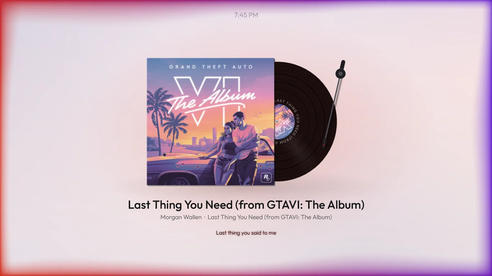
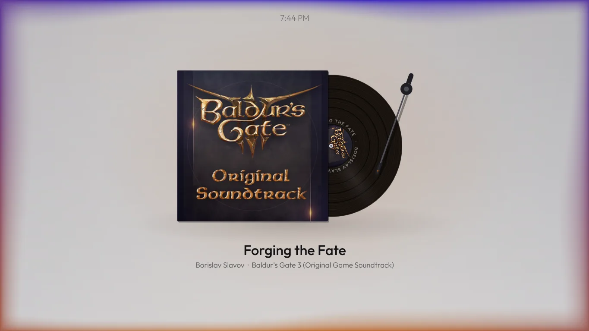
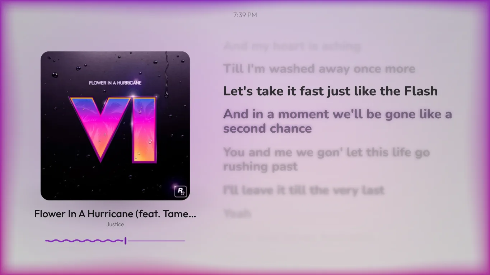
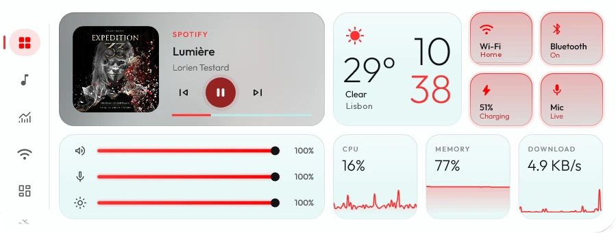
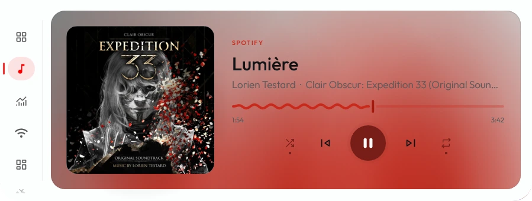
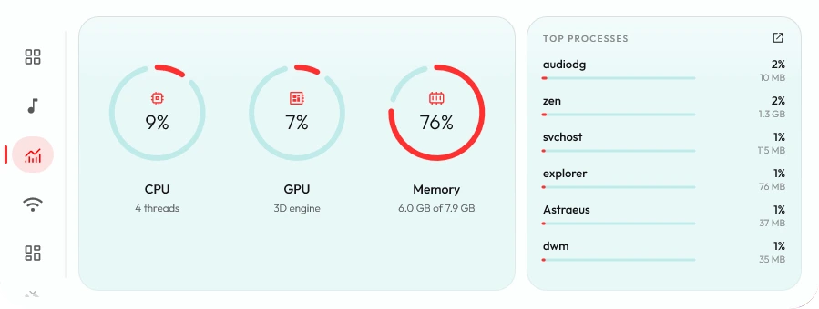
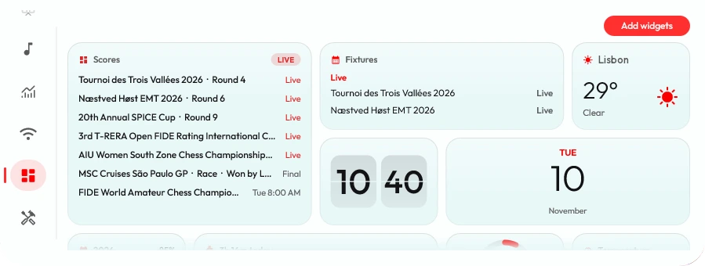
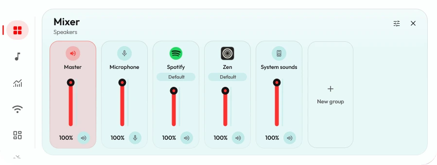
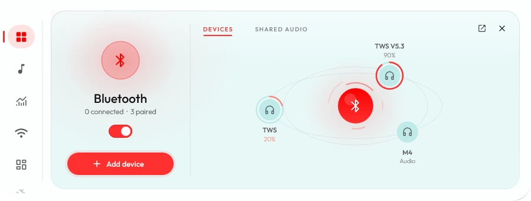
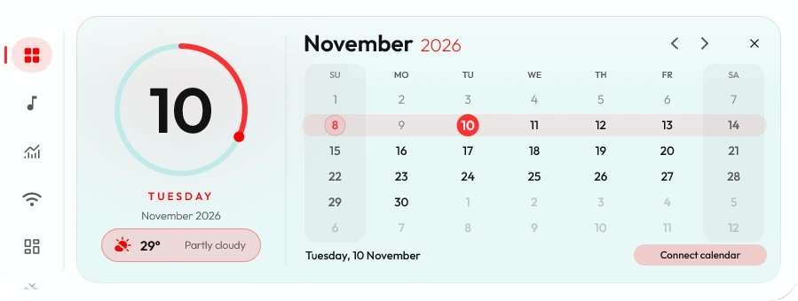
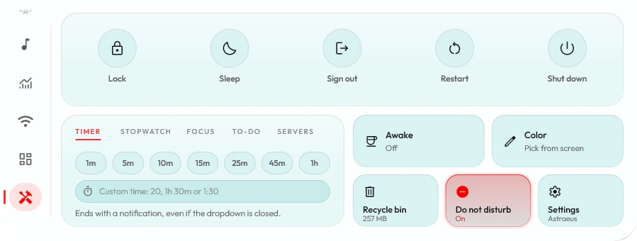
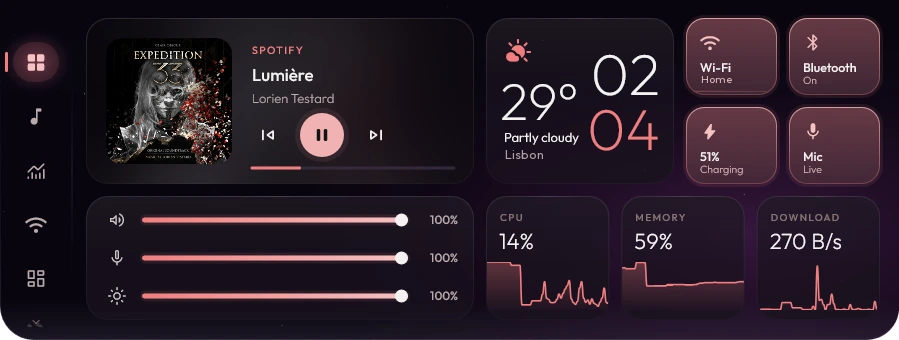
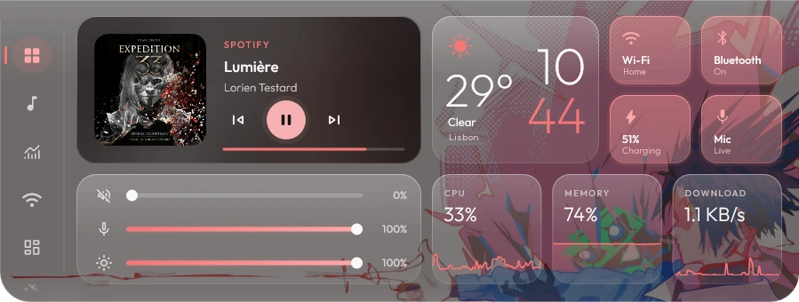
It barely touches your PC while it waits, so your games, battery and fans won't notice it's there. A real Windows app in one small file, not a website in disguise.
Get it.
Free, with no ads and no account. One small download for Windows 10 and 11: no installer, and it keeps itself up to date.
Download AstraeusIf Windows says "Windows protected your PC", click More info, then Run anyway